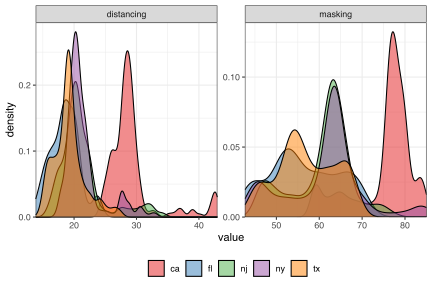

library(epidatr)
library(epiprocess)
library(epipredict)
library(recipes)
library(parsnip)
library(workflows)
library(poissonreg)5 Examples of Preprocessing and Models
5.1 Introduction
The epipredict package utilizes the tidymodels framework, namely {recipes} for dplyr-like pipeable sequences of feature engineering and {parsnip} for a unified interface to a range of models.
epipredict has additional customized feature engineering and preprocessing steps, such as step_epi_lag(), step_population_scaling(), step_epi_naomit(). They can be used along with steps from the {recipes} package for more feature engineering.
In this vignette, we will illustrate some examples of how to use epipredict with recipes and parsnip for different purposes of epidemiological forecasting. We will focus on basic autoregressive models, in which COVID cases and deaths in the near future are predicted using a linear combination of cases and deaths in the near past.
The remaining vignette will be split into three sections. The first section, we will use a Poisson regression to predict death counts. In the second section, we will use a linear regression to predict death rates. Last but not least, we will create a classification model for hotspot predictions.
5.2 Poisson Regression
During COVID-19, the U.S. Centers for Disease Control and Prevention (CDC) collected models and forecasts to characterize the state of an outbreak and its course. They use it to inform public health decision makers on potential consequences of deploying control measures.
One of the outcomes that the CDC forecasts is death counts from COVID-19. Although there are many state-of-the-art models, we choose to use Poisson regression, the textbook example for modeling count data, as an illustration for using the epipredict package with other existing tidymodels packages.
geos <- c("ca", "fl", "tx", "ny", "nj")
x <- covidcast(
data_source = "jhu-csse",
signals = "confirmed_incidence_num",
time_type = "day",
geo_type = "state",
time_values = epirange(20210604, 20211231),
geo_values = geos
) %>%
fetch() %>%
select(geo_value, time_value, cases = value)
y <- covidcast(
data_source = "jhu-csse",
signals = "deaths_incidence_num",
time_type = "day",
geo_type = "state",
time_values = epirange(20210604, 20211231),
geo_values = geos
) %>%
fetch() %>%
select(geo_value, time_value, deaths = value)
counts_subset <- full_join(x, y, by = c("geo_value", "time_value")) %>%
as_epi_df()The counts_subset dataset comes from the epidatr package, and contains the number of confirmed cases and deaths from June 4, 2021 to Dec 31, 2021 in some U.S. states.
We wish to predict the 7-day ahead death counts with lagged cases and deaths. Furthermore, we will let each state be a dummy variable. Using differential intercept coefficients, we can allow for an intercept shift between states.
One possible model takes the form \[\begin{aligned} \log\left( \mu_{t+7} \right) &{}= \beta_0 + \delta_1 s_{\text{state}_1} + \delta_2 s_{\text{state}_2} + \cdots + \nonumber \\ &\quad\beta_1 \text{deaths}_{t} + \beta_2 \text{deaths}_{t-7} + \beta_3 \text{cases}_{t} + \beta_4 \text{cases}_{t-7}, \end{aligned}\]where \(\mu_{t+7} = \mathbb{E}(\text{deaths}_{t+7})\), and \(\text{deaths}_{t+7}\) is assumed to follow a Poisson distribution with mean \(\mu_{t+7}\); \(s_{\text{state}}\) are dummy variables for each state and take values of either 0 or 1.
Preprocessing steps will be performed to prepare the data for model fitting. But before diving into them, it will be helpful to understand what roles are in the recipes framework.
Aside on recipes
recipes can assign one or more roles to each column in the data. The roles are not restricted to a predefined set; they can be anything. For most conventional situations, they are typically “predictor” and/or “outcome”. Additional roles enable targeted step_*() operations on specific variables or groups of variables.
In our case, the role predictor is given to explanatory variables on the right-hand side of the model (in the equation above). The role outcome is the response variable that we wish to predict. geo_value and time_value are predefined roles that are unique to the epipredict package. Since we work with epi_df objects, all datasets should have geo_value and time_value passed through automatically with these two roles assigned to the appropriate columns in the data.
The recipes package also allows manual alterations of roles in bulk. There are a few handy functions that can be used together to help us manipulate variable roles easily.
update_role()alters an existing role in the recipe or assigns an initial role to variables that do not yet have a declared role.
add_role()adds an additional role to variables that already have a role in the recipe, without overwriting old roles.
remove_role()eliminates a single existing role in the recipe.
End aside
Notice in the following preprocessing steps, we used add_role() on geo_value_factor since, currently, the default role for it is raw, but we would like to reuse this variable as a predictor.
counts_subset <- counts_subset %>%
mutate(geo_value_factor = as.factor(geo_value)) %>%
as_epi_df()
epi_recipe(counts_subset)
r <- epi_recipe(counts_subset) %>%
add_role(geo_value_factor, new_role = "predictor") %>%
step_dummy(geo_value_factor) %>%
## Occasionally, data reporting errors / corrections result in negative
## cases / deaths
step_mutate(cases = pmax(cases, 0), deaths = pmax(deaths, 0)) %>%
step_epi_lag(cases, deaths, lag = c(0, 7)) %>%
step_epi_ahead(deaths, ahead = 7, role = "outcome") %>%
step_epi_naomit()After specifying the preprocessing steps, we will use the parsnip package for modeling and producing the prediction for death count, 7 days after the latest available date in the dataset.
latest <- get_test_data(r, counts_subset)
wf <- epi_workflow(r, parsnip::poisson_reg()) %>%
fit(counts_subset)
predict(wf, latest) %>% filter(!is.na(.pred))#> An `epi_df` object, 5 x 3 with metadata:
#> * geo_type = state
#> * time_type = day
#> * as_of = 2023-06-13 16:30:27
#>
#> # A tibble: 5 × 3
#> geo_value time_value .pred
#> * <chr> <date> <dbl>
#> 1 ca 2021-12-31 108.
#> 2 fl 2021-12-31 270.
#> 3 nj 2021-12-31 22.5
#> 4 ny 2021-12-31 94.8
#> 5 tx 2021-12-31 91.0Note that the time_value corresponds to the last available date in the training set, NOT to the target date of the forecast (2022-01-07).
Let’s take a look at the fit:
extract_fit_engine(wf)#>
#> Call: stats::glm(formula = ..y ~ ., family = stats::poisson, data = data)
#>
#> Coefficients:
#> (Intercept) geo_value_factor_fl geo_value_factor_nj
#> 3.970e+00 -1.487e-01 -1.425e+00
#> geo_value_factor_ny geo_value_factor_tx lag_0_cases
#> -6.865e-01 3.025e-01 1.339e-05
#> lag_7_cases lag_0_deaths lag_7_deaths
#> 1.717e-06 1.731e-03 8.566e-04
#>
#> Degrees of Freedom: 984 Total (i.e. Null); 976 Residual
#> Null Deviance: 139600
#> Residual Deviance: 58110 AIC: 62710Alternative forms of Poisson regression or particular computational approaches can be applied via arguments to parsnip::poisson_reg() for some common settings, and by using parsnip::set_engine() to use a specific Poisson regression engine and to provide additional engine-specific customization.
5.3 Linear Regression
For COVID-19, the CDC required submission of case and death count predictions. However, the Delphi Group preferred to train on rate data instead, because it puts different locations on a similar scale (eliminating the need for location-specific intercepts). We can use a linear regression to predict the death rates and use state population data to scale the rates to counts.1 We will do so using layer_population_scaling() from the epipredict package. (We could also use step_population_scaling() from the epipredict package to prepare rate data from count data in the preprocessing recipe.)
Additionally, when forecasts are submitted, prediction intervals should be provided along with the point estimates. This can be obtained via postprocessing using layer_residual_quantiles(). It is worth pointing out, however, that layer_residual_quantiles() should be used before population scaling or else the transformation will make the results uninterpretable.
We wish, now, to predict the 7-day ahead death counts with lagged case rates and death rates, along with some extra behaviourial predictors. Namely, we will use survey data from COVID-19 Trends and Impact Survey.
The survey data provides the estimated percentage of people who wore a mask for most or all of the time while in public in the past 7 days and the estimated percentage of respondents who reported that all or most people they encountered in public in the past 7 days maintained a distance of at least 6 feet.
State-wise population data from the 2019 U.S. Census is included in this package and will be used in layer_population_scaling().
behav_ind_mask <- covidcast(
data_source = "fb-survey",
signals = "smoothed_wwearing_mask_7d",
time_type = "day",
geo_type = "state",
time_values = epirange(20210604, 20211231),
geo_values = geos
) %>%
fetch() %>%
select(geo_value, time_value, masking = value)
behav_ind_distancing <- covidcast(
data_source = "fb-survey",
signals = "smoothed_wothers_distanced_public",
time_type = "day",
geo_type = "state",
time_values = epirange(20210604, 20211231),
geo_values = geos
) %>%
fetch() %>%
select(geo_value, time_value, distancing = value)
pop_dat <- state_census %>% select(abbr, pop)
behav_ind <- behav_ind_mask %>%
full_join(behav_ind_distancing, by = c("geo_value", "time_value"))Rather than using raw mask-wearing / social-distancing metrics, for the sake of illustration, we’ll convert both into categorical predictors.

We will take a subset of death rate and case rate data from the built-in dataset case_death_rate_subset.
jhu <- filter(
case_death_rate_subset,
time_value >= "2021-06-04",
time_value <= "2021-12-31",
geo_value %in% c("ca", "fl", "tx", "ny", "nj")
)Preprocessing steps will again rely on functions from the epipredict package as well as the recipes package. There are also many functions in the recipes package that allow for scalar transformations, such as log transformations and data centering. In our case, we will center the numerical predictors to allow for a more meaningful interpretation of the intercept.
jhu <- jhu %>%
mutate(geo_value_factor = as.factor(geo_value)) %>%
left_join(behav_ind, by = c("geo_value", "time_value")) %>%
as_epi_df()
r <- epi_recipe(jhu) %>%
add_role(geo_value_factor, new_role = "predictor") %>%
step_dummy(geo_value_factor) %>%
step_epi_lag(case_rate, death_rate, lag = c(0, 7, 14)) %>%
step_mutate(
masking = cut_number(masking, 5),
distancing = cut_number(distancing, 5)
) %>%
step_epi_ahead(death_rate, ahead = 7, role = "outcome") %>%
step_center(contains("lag"), role = "predictor") %>%
step_epi_naomit()As a sanity check we can examine the structure of the training data:
glimpse(slice_sample(bake(prep(r, jhu), jhu), n = 6))#> Rows: 6
#> Columns: 17
#> $ time_value <date> 2021-10-29, 2021-08-18, 2021-07-06, 2021-09-28…
#> $ geo_value <chr> "fl", "ca", "ny", "nj", "ca", "fl"
#> $ case_rate <dbl> 7.987081, 35.039629, 1.846962, 21.278102, 26.91…
#> $ death_rate <dbl> 0.5698954, 0.1259178, 0.0258575, 0.2251651, 0.2…
#> $ masking <fct> "(52.8,60.2]", "(69.7,85]", "[42.7,52.8]", "(60…
#> $ distancing <fct> "(18.4,19.8]", "(27,43]", "(21.1,27]", "(19.8,2…
#> $ geo_value_factor_fl <dbl> 1, 0, 0, 0, 0, 1
#> $ geo_value_factor_nj <dbl> 0, 0, 0, 1, 0, 0
#> $ geo_value_factor_ny <dbl> 0, 0, 1, 0, 0, 0
#> $ geo_value_factor_tx <dbl> 0, 0, 0, 0, 0, 0
#> $ lag_0_case_rate <dbl> -18.95458185, 8.09796675, -25.09470065, -5.6635…
#> $ lag_7_case_rate <dbl> -17.368472, 4.657906, -25.243935, -1.325915, 5.…
#> $ lag_14_case_rate <dbl> -14.5794681, -0.2855479, -25.1803998, -0.732444…
#> $ lag_0_death_rate <dbl> 0.288021796, -0.155955804, -0.256016104, -0.056…
#> $ lag_7_death_rate <dbl> 0.3386352965, -0.3399337035, -0.2493671035, -0.…
#> $ lag_14_death_rate <dbl> 0.5016504, -0.1668420, -0.2390241, -0.0840500, …
#> $ ahead_7_death_rate <dbl> 0.4364597, 0.2032103, 0.0236411, 0.2332067, 0.3…Before directly predicting the results, we need to add postprocessing layers to obtain the death counts instead of death rates. Note that the rates used so far are “per 100K people” rather than “per person”. We’ll also use quantile regression with the quantile_reg engine rather than ordinary least squares to create median predictions and a 90% prediction interval.
f <- frosting() %>%
layer_predict() %>%
layer_add_target_date("2022-01-07") %>%
layer_threshold(.pred, lower = 0) %>%
layer_quantile_distn() %>%
layer_naomit(.pred) %>%
layer_population_scaling(
.pred, .pred_distn,
df = pop_dat,
rate_rescaling = 1e5,
by = c("geo_value" = "abbr"),
df_pop_col = "pop"
)
wf <- epi_workflow(r, quantile_reg(tau = c(.05, .5, .95))) %>%
fit(jhu) %>%
add_frosting(f)
latest <- get_test_data(recipe = r, x = jhu)
p <- predict(wf, latest)
p#> An `epi_df` object, 5 x 7 with metadata:
#> * geo_type = state
#> * time_type = day
#> * as_of = 2022-05-31 12:08:25
#>
#> # A tibble: 5 × 7
#> geo_value time_value .pred target_date .pred_distn
#> * <chr> <date> <dist> <date> <dist>
#> 1 ca 2021-12-31 [0.05, 0.95]<q-rng> 2022-01-07 [0.25, 0.75]<q-rng>
#> 2 fl 2021-12-31 [0.05, 0.95]<q-rng> 2022-01-07 [0.25, 0.75]<q-rng>
#> 3 nj 2021-12-31 [0.05, 0.95]<q-rng> 2022-01-07 [0.25, 0.75]<q-rng>
#> 4 ny 2021-12-31 [0.05, 0.95]<q-rng> 2022-01-07 [0.25, 0.75]<q-rng>
#> 5 tx 2021-12-31 [0.05, 0.95]<q-rng> 2022-01-07 [0.25, 0.75]<q-rng>
#> # ℹ 2 more variables: .pred_scaled <dist>, .pred_distn_scaled <dist>The columns marked *_scaled have been rescaled to the correct units, in this case deaths rather than deaths per 100K people (these remain in .pred).
To look at the prediction intervals:
p %>%
select(geo_value, target_date, .pred_scaled, .pred_distn_scaled) %>%
mutate(.pred_distn_scaled = nested_quantiles(.pred_distn_scaled)) %>%
unnest(.pred_distn_scaled) %>%
pivot_wider(names_from = tau, values_from = q)#> # A tibble: 5 × 5
#> geo_value target_date .pred_scaled `0.25` `0.75`
#> <chr> <date> <dist> <dbl> <dbl>
#> 1 ca 2022-01-07 [0.05, 0.95]<q-rng> 48.8 94.0
#> 2 fl 2022-01-07 [0.05, 0.95]<q-rng> 48.4 104.
#> 3 nj 2022-01-07 [0.05, 0.95]<q-rng> 45.5 68.7
#> 4 ny 2022-01-07 [0.05, 0.95]<q-rng> 108. 163.
#> 5 tx 2022-01-07 [0.05, 0.95]<q-rng> 68.6 107.Last but not least, let’s take a look at the regression fit and check the coefficients:
#> Call:
#> quantreg::rq(formula = ..y ~ ., tau = ~c(0.05, 0.5, 0.95), data = data,
#> na.action = function (object, ...)
#> UseMethod("na.omit"), method = "br", model = FALSE)
#>
#> Coefficients:
#> tau= 0.05 tau= 0.50 tau= 0.95
#> (Intercept) 0.210811625 0.2962574475 0.417583265
#> geo_value_factor_fl 0.032085820 0.0482361119 0.171126713
#> geo_value_factor_nj 0.007313762 -0.0033797953 -0.025251865
#> geo_value_factor_ny -0.001489163 -0.0199485947 -0.032635584
#> geo_value_factor_tx 0.029077485 0.0391980273 0.071961515
#> lag_0_case_rate -0.001636588 -0.0011625693 -0.001430622
#> lag_7_case_rate 0.004700752 0.0057822095 0.006912655
#> lag_14_case_rate 0.001715816 0.0004224753 0.003448733
#> lag_0_death_rate 0.462341754 0.5274192012 0.164856372
#> lag_7_death_rate -0.007368501 0.1132903956 0.172687438
#> lag_14_death_rate -0.072500707 -0.0270474349 0.181279299
#>
#> Degrees of freedom: 950 total; 939 residual5.4 Classification
Sometimes it is preferable to create a predictive model for surges or upswings rather than for raw values. In this case, the target is to predict if the future will have increased case rates (denoted up), decreased case rates (down), or flat case rates (flat) relative to the current level. Such models may be referred to as “hotspot prediction models”. We will follow the analysis in McDonald, Bien, Green, Hu, et al. but extend the application to predict three categories instead of two.
Hotspot prediction uses a categorical outcome variable defined in terms of the relative change of \(Y_{\ell, t+a}\) compared to \(Y_{\ell, t}\). Where \(Y_{\ell, t}\) denotes the case rates in location \(\ell\) at time \(t\). We define the response variables as follows:
\[ Z_{\ell, t}= \begin{cases} \text{up}, & \text{if}\ Y^{\Delta}_{\ell, t} > 0.25 \\ \text{down}, & \text{if}\ Y^{\Delta}_{\ell, t} < -0.20\\ \text{flat}, & \text{otherwise} \end{cases} \]
where \(Y^{\Delta}_{\ell, t} = (Y_{\ell, t}- Y_{\ell, t-7})\ /\ (Y_{\ell, t-7})\). We say location \(\ell\) is a hotspot at time \(t\) when \(Z_{\ell,t}\) is up, meaning the number of newly reported cases over the past 7 days has increased by at least 25% compared to the preceding week. When \(Z_{\ell,t}\) is categorized as down, it suggests that there has been at least a 20% decrease in newly reported cases over the past 7 days (a 20% decrease is the inverse of a 25% increase). Otherwise, we will consider the trend to be flat.
The expression of the multinomial regression we will use is as follows: \[ \pi_{j}(x) = \text{Pr}(Z_{\ell,t} = j|x) = \frac{e^{g_j(x)}}{1 + \sum_{k=0}^2 g_j(x) } \] where \(j\) is either down, flat, or up
\[ \begin{aligned} g_{\text{down}}(x) &= 0,\\ g_{\text{flat}}(x) &= \log\left(\frac{Pr(Z_{\ell,t}=\text{flat}|x)}{Pr(Z_{\ell,t}=\text{down}|x)}\right) = \beta_{10} + \beta_{11}t + \delta_{10} s_{\text{state}_1} + \delta_{11} s_{\text{state}_2} + \cdots \nonumber \\ &\quad +\ \beta_{12} Y^{\Delta}_{\ell, t} + \beta_{13} Y^{\Delta}_{\ell, t-7}, \\ g_{\text{flat}}(x) &= \log\left(\frac{Pr(Z_{\ell,t}=\text{up}|x)}{Pr(Z_{\ell,t}=\text{down}|x)}\right) = \beta_{20} + \beta_{21}t + \delta_{20} s_{\text{state}_1} + \delta_{21} s_{\text{state}_2} + \cdots \nonumber \\ &\quad +\ \beta_{22} Y^{\Delta}_{\ell, t} + \beta_{23} Y^{\Delta}_{\ell, t-7}. \end{aligned} \]
Preprocessing steps are similar to the previous models with an additional step of categorizing the response variables. Again, we will use a subset of death rate and case rate data from our built-in dataset case_death_rate_subset.
jhu <- case_death_rate_subset %>%
dplyr::filter(
time_value >= "2021-06-04",
time_value <= "2021-12-31",
geo_value %in% c("ca", "fl", "tx", "ny", "nj")
) %>%
mutate(geo_value_factor = as.factor(geo_value)) %>%
as_epi_df()
r <- epi_recipe(jhu) %>%
add_role(time_value, new_role = "predictor") %>%
step_dummy(geo_value_factor) %>%
step_epi_lag(case_rate, lag = c(0, 7, 14)) %>%
step_epi_ahead(case_rate, ahead = 7, role = "predictor") %>%
step_mutate(
pct_diff_ahead = case_when(
lag_7_case_rate == 0 ~ 0,
TRUE ~ (ahead_7_case_rate - lag_0_case_rate) / lag_0_case_rate
),
pct_diff_wk1 = case_when(
lag_7_case_rate == 0 ~ 0,
TRUE ~ (lag_0_case_rate - lag_7_case_rate) / lag_7_case_rate
),
pct_diff_wk2 = case_when(
lag_14_case_rate == 0 ~ 0,
TRUE ~ (lag_7_case_rate - lag_14_case_rate) / lag_14_case_rate
)
) %>%
step_mutate(
response = case_when(
pct_diff_ahead < -0.20 ~ "down",
pct_diff_ahead > 0.25 ~ "up",
TRUE ~ "flat"
),
role = "outcome"
) %>%
step_rm(
death_rate, case_rate, lag_0_case_rate, lag_7_case_rate,
lag_14_case_rate, ahead_7_case_rate, pct_diff_ahead
) %>%
step_epi_naomit()We will fit the multinomial regression and examine the predictions:
wf <- epi_workflow(r, parsnip::multinom_reg()) %>%
fit(jhu)
latest <- get_test_data(recipe = r, x = jhu)
predict(wf, latest) %>% filter(!is.na(.pred_class))#> An `epi_df` object, 5 x 3 with metadata:
#> * geo_type = state
#> * time_type = day
#> * as_of = 2022-05-31 12:08:25
#>
#> # A tibble: 5 × 3
#> geo_value time_value .pred_class
#> * <chr> <date> <fct>
#> 1 ca 2021-12-31 up
#> 2 fl 2021-12-31 up
#> 3 nj 2021-12-31 up
#> 4 ny 2021-12-31 up
#> 5 tx 2021-12-31 flatWe can also look at the estimated coefficients and model summary information:
extract_fit_engine(wf)#> Call:
#> nnet::multinom(formula = ..y ~ ., data = data, trace = FALSE)
#>
#> Coefficients:
#> (Intercept) time_value geo_value_factor_fl geo_value_factor_nj
#> flat -58.11177 0.003162471 -0.5978151 1.350320
#> up 46.45080 -0.002429847 -0.4682080 1.572085
#> geo_value_factor_ny geo_value_factor_tx pct_diff_wk1 pct_diff_wk2
#> flat 3.113677 -0.3010305 1.263089 3.610543
#> up 3.172692 -0.2505232 2.194646 4.266267
#>
#> Residual Deviance: 1529.929
#> AIC: 1561.929One could also use a formula in epi_recipe() to achieve the same results as above. However, only one of add_formula(), add_recipe(), or workflow_variables() can be specified. For the purpose of demonstrating add_formula rather than add_recipe, we will prep and bake our recipe to return a data.frame that could be used for model fitting.
b <- bake(prep(r, jhu), jhu)
epi_workflow() %>%
add_formula(response ~ geo_value + time_value + pct_diff_wk1 + pct_diff_wk2) %>%
add_model(parsnip::multinom_reg()) %>%
fit(data = b)#> ══ Workflow [trained] ═══════════════════════════════════════════════════════
#> Preprocessor: Formula
#> Model: multinom_reg()
#>
#> ── Preprocessor ─────────────────────────────────────────────────────────────
#> response ~ geo_value + time_value + pct_diff_wk1 + pct_diff_wk2
#>
#> ── Model ────────────────────────────────────────────────────────────────────
#> Call:
#> nnet::multinom(formula = ..y ~ ., data = data, trace = FALSE)
#>
#> Coefficients:
#> (Intercept) geo_valuefl geo_valuenj geo_valueny geo_valuetx
#> flat -58.11158 -0.5978159 1.350325 3.113684 -0.3010308
#> up 46.45071 -0.4682087 1.572090 3.172698 -0.2505236
#> time_value pct_diff_wk1 pct_diff_wk2
#> flat 0.003162461 1.263093 3.610536
#> up -0.002429839 2.194649 4.266259
#>
#> Residual Deviance: 1529.929
#> AIC: 1561.9295.5 Benefits of Lagging and Leading in epipredict
The step_epi_ahead and step_epi_lag functions in the epipredict package is handy for creating correct lags and leads for future predictions.
Let’s start with a simple dataset and preprocessing:
ex <- filter(
case_death_rate_subset,
time_value >= "2021-12-01",
time_value <= "2021-12-31",
geo_value == "ca"
)
dim(ex)#> [1] 31 4We want to predict death rates on 2022-01-07, which is 7 days ahead of the latest available date in our dataset.
We will compare two methods of trying to create lags and leads:
p1 <- epi_recipe(ex) %>%
step_epi_lag(case_rate, lag = c(0, 7, 14)) %>%
step_epi_lag(death_rate, lag = c(0, 7, 14)) %>%
step_epi_ahead(death_rate, ahead = 7, role = "outcome") %>%
step_epi_naomit() %>%
prep()
b1 <- bake(p1, ex)
b1#> # A tibble: 17 × 11
#> time_value geo_value case_rate death_rate lag_0_case_rate lag_7_case_rate
#> <date> <chr> <dbl> <dbl> <dbl> <dbl>
#> 1 2021-12-15 ca 15.8 0.157 15.8 18.0
#> 2 2021-12-16 ca 16.3 0.155 16.3 17.4
#> 3 2021-12-17 ca 16.9 0.158 16.9 17.4
#> 4 2021-12-18 ca 17.6 0.164 17.6 17.2
#> 5 2021-12-19 ca 19.1 0.165 19.1 16.3
#> 6 2021-12-20 ca 20.6 0.164 20.6 16.0
#> # ℹ 11 more rows
#> # ℹ 5 more variables: lag_14_case_rate <dbl>, lag_0_death_rate <dbl>, …p2 <- epi_recipe(ex) %>%
step_mutate(
lag0case_rate = lag(case_rate, 0),
lag7case_rate = lag(case_rate, 7),
lag14case_rate = lag(case_rate, 14),
lag0death_rate = lag(death_rate, 0),
lag7death_rate = lag(death_rate, 7),
lag14death_rate = lag(death_rate, 14),
ahead7death_rate = lead(death_rate, 7)
) %>%
step_epi_naomit() %>%
prep()
b2 <- bake(p2, ex)
b2#> # A tibble: 10 × 11
#> time_value geo_value case_rate death_rate lag0case_rate lag7case_rate
#> <date> <chr> <dbl> <dbl> <dbl> <dbl>
#> 1 2021-12-15 ca 15.8 0.157 15.8 18.0
#> 2 2021-12-16 ca 16.3 0.155 16.3 17.4
#> 3 2021-12-17 ca 16.9 0.158 16.9 17.4
#> 4 2021-12-18 ca 17.6 0.164 17.6 17.2
#> 5 2021-12-19 ca 19.1 0.165 19.1 16.3
#> 6 2021-12-20 ca 20.6 0.164 20.6 16.0
#> # ℹ 4 more rows
#> # ℹ 5 more variables: lag14case_rate <dbl>, lag0death_rate <dbl>, …Notice the difference in number of rows b1 and b2 returns. This is because the second version, the one that doesn’t use step_epi_ahead and step_epi_lag, has omitted dates compared to the one that used the epipredict functions.
dates_used_in_training1 <- b1 %>%
select(-ahead_7_death_rate) %>%
na.omit() %>%
select(time_value)
dates_used_in_training1#> # A tibble: 17 × 1
#> time_value
#> <date>
#> 1 2021-12-15
#> 2 2021-12-16
#> 3 2021-12-17
#> 4 2021-12-18
#> 5 2021-12-19
#> 6 2021-12-20
#> # ℹ 11 more rowsdates_used_in_training2 <- b2 %>%
select(-ahead7death_rate) %>%
na.omit() %>%
select(time_value)
dates_used_in_training2#> # A tibble: 10 × 1
#> time_value
#> <date>
#> 1 2021-12-15
#> 2 2021-12-16
#> 3 2021-12-17
#> 4 2021-12-18
#> 5 2021-12-19
#> 6 2021-12-20
#> # ℹ 4 more rowsThe model that is trained based on the {recipes} functions will predict 7 days ahead from 2021-12-24 instead of 7 days ahead from 2021-12-31.
5.6 References
McDonald, Bien, Green, Hu, et al. “Can auxiliary indicators improve COVID-19 forecasting and hotspot prediction?.” Proceedings of the National Academy of Sciences 118.51 (2021): e2111453118. doi:10.1073/pnas.2111453118
5.7 Attribution
This vignette contains a modified part of the COVID-19 Data Repository by the Center for Systems Science and Engineering (CSSE) at Johns Hopkins University as republished in the COVIDcast Epidata API.. See the COVIDcast Epidata API documentation for its modifications, and the code above for further modifications. This data set is licensed under the terms of the Creative Commons Attribution 4.0 International license by the Johns Hopkins University on behalf of its Center for Systems Science in Engineering. Copyright Johns Hopkins University 2020.
We could continue with the Poisson model, but we’ll switch to the Gaussian likelihood just for simplicity.↩︎